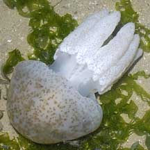
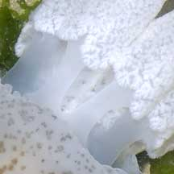

|
|
| jellyfish text index | photo index |
| Phylum Cnidaria > jellyfish > Class Scyphozoa > Order Rhizostomeae |
| Fat-armed
jellyfish Catostylus sp. Family Catosylidae updated Sep 2025 Where seen? This large jellyfish is sometimes seen on some of our shores. Usually alone, not in groups of many individuals. Features: Bell about 10cm in diameter with fat sausage-like oral arms. The arms do not have a long 'tail'. Status and threats: There is inadequate information as at 2024 to make an informed assesment of its conservation status in Singapore. |
 Changi, Apr 05 |
 |
 |
| Fat-armed jellyfishes on Singapore shores |
On wildsingapore
flickr
|
| Other sightings on Singapore shores |
| Jellyfish swimming in oil slick Tanah Merah from Loh Kok Sheng on Vimeo. |
| Acknowlegement With grateful thanks to Dr Michael N Dawson of the University of California, Merced for identifying this jellyfish. Links
|